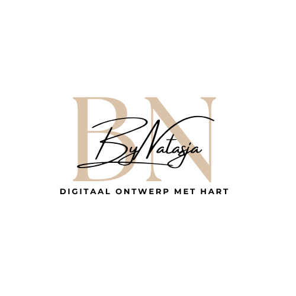
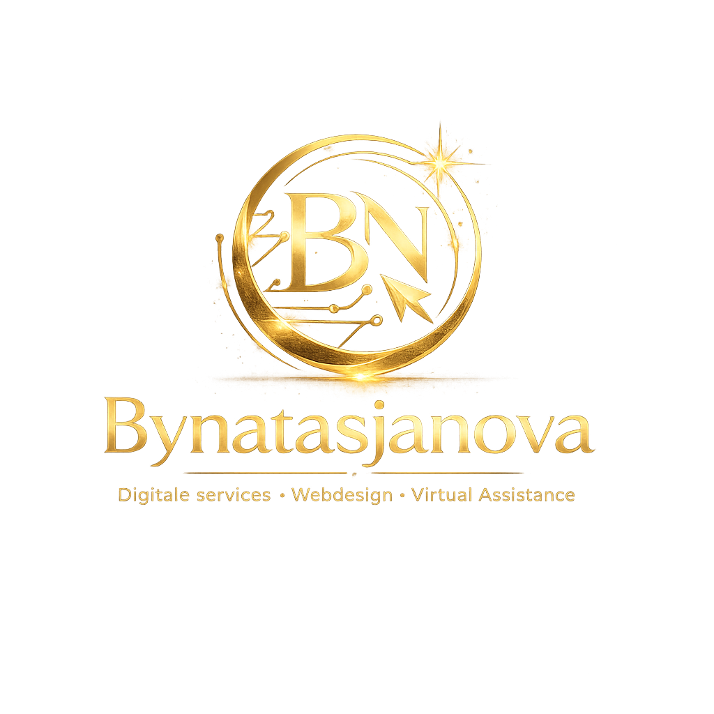
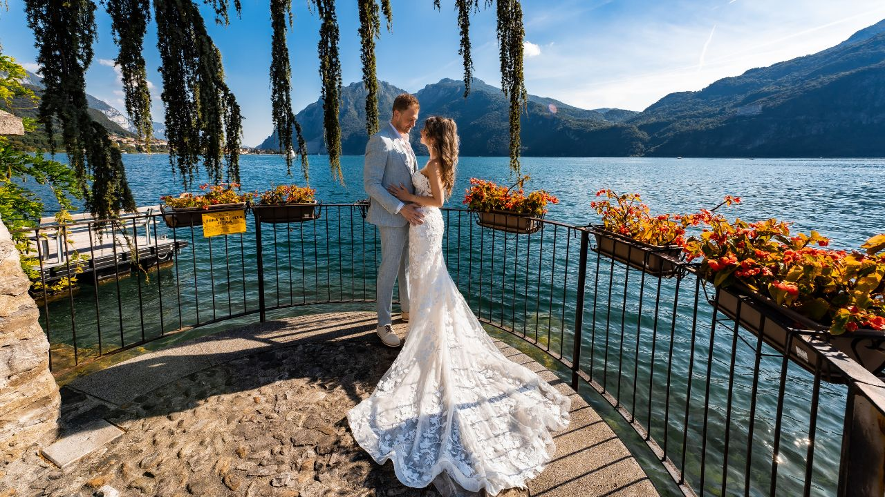
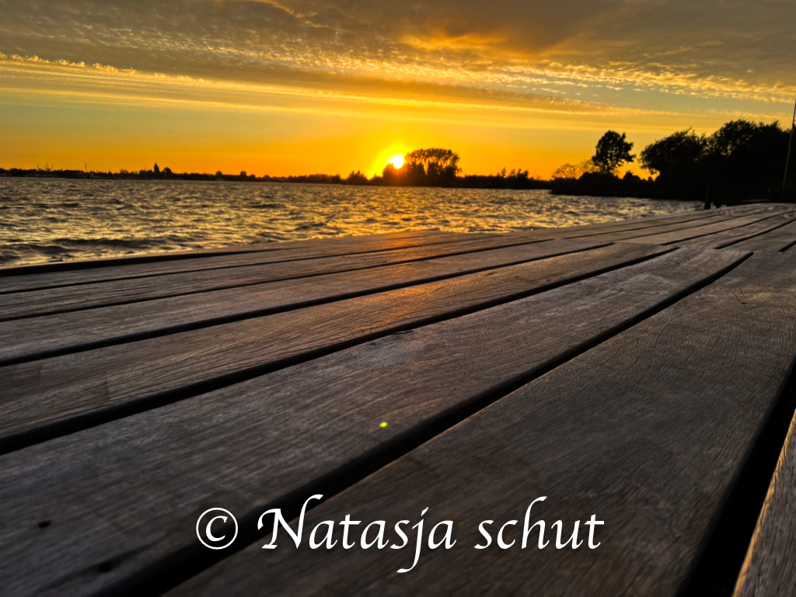

Mijn projecten
Een selectie van projecten en creatief werk.

Website bynatasja
Mijn hoofdwebsite waar ik mijn missie en visie deel, diensten aanbied en waar je contact kunt opnemen. Gemaakt in WordPress met veel plezier.
Live site →
Bynatasjanova
Een platform waar ik mijn diensten aanbied en mijn visie deel. Gebouwd met HTML en CSS — een project waar ik erg trots op ben.
Live site →Magazine
Als test om uit te proberen wat ik allemaal kan — later ook een magazine gemaakt voor mijn ouders. Ze waren erg blij met het resultaat!
Download PDF →
Bouwbedrijf Schepers
Een conceptwebsite voor vrienden om hun passie en werk online zichtbaar te maken. Creatieve concepten omzetten naar een sterke digitale uitstraling.
Demo bekijken →
Septa Surf School — Bali
Een website voor een surf school in Bali. Bijna klaar en gemaakt met veel plezier in HTML en CSS.
Demo bekijken →
Wedding uitnodiging website
Mijn creativiteit kwijt in een prachtige website voor een bruiloftsuitnodiging. Strak en romantisch ontwerp.
Bekijken →
Productfotografie AMW Marine
Foto's gemaakt van producten voor de webshop van AMW Marine. Commerciële productfotografie voor een professionele webshop.
Webshop bekijken →
Natuurfotografie — Friesland
Ik vind het super leuk om verschillende soorten foto's te maken. Deze prachtige foto is gemaakt in Friesland.

Wildlife — Zuid-Afrika
Een vliegende vogel op precies het goede moment vastgelegd. "Omg, ik heb het perfecte moment vastgelegd!" — gemaakt in Zuid-Afrika.

Creatieve fotobewerking
Meer dan standaardfotografie — ik bewerk foto's creatief. Op deze foto zie je hoe ik mezelf in een andere omgeving heb geplaatst.

Dierenfotografie — Spanje
Dierenfotografie is iets wat ik ook enorm leuk vind. Deze foto is gemaakt tijdens een bezoek aan Spanje.
Project — hart voor dieren
Een website in ontwikkeling voor een goede vriend. Binnenkort meer hierover te lezen en zien als deze klaar is.